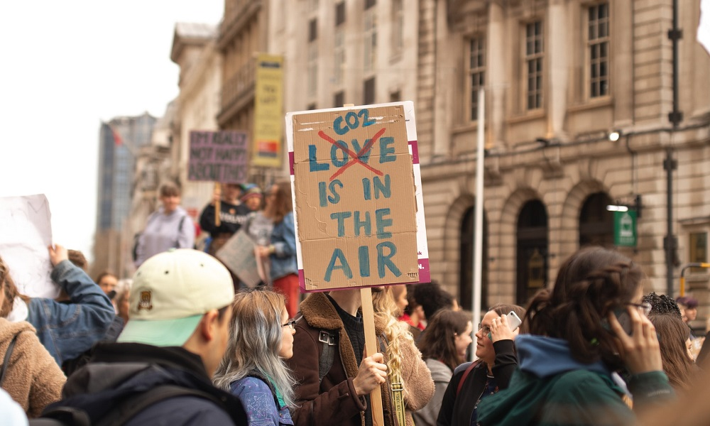

Good health and well-being
Good health and well-being is essential to sustainable development, and is one of United Nations sustainable development goals. Fighting communicable diseases and reducing illness and death from pollution are two of many targets related to this goal [4]. Our goal is that Expozance will make it easier for people to decrease exposure to polluted air, and we also hope that it can contribute in mitigating the damage of COVID-19.
Air pollution
About seven million people die worldwide every year of air pollution. Ambient air pollution accounts for 4.2 million deaths each year, while exposure to smoke from cooking accounts for 3.8 million premature deaths yearly. In 2016 91% of the world population breathe air that contains high levels of pollutants according to WHO. Most of the deaths occur in low- and middle-income countries in south-east Asia and Western Pacific regions. Air pollution increases risk of mortality from heart disease, stroke, lung cancer and acute respiratory infections [1].
COVID-19
The world is currently facing a global health crisis. COVID-19 has caused over one million confirmed deaths worldwide, and the economic and social impacts of COVID-19 is devastating. Major progress was made improving healthcare for people around the globe before the pandemic [3]. Disruptions caused by COVID-19 could reverse decades of progress [4].